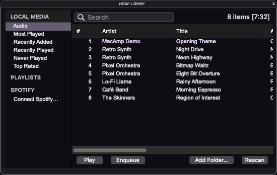
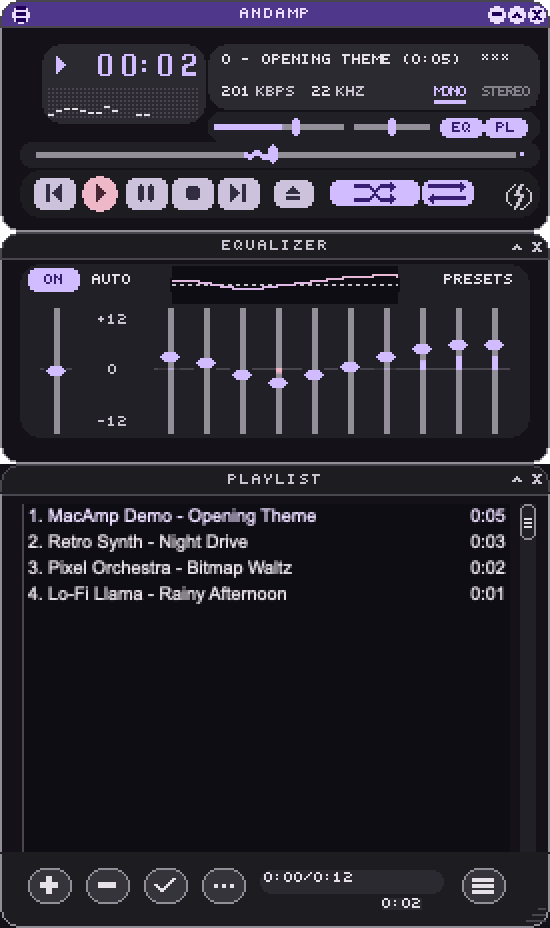
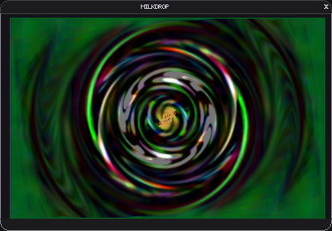

Download
Grab MacAmp.zip from the latest release, unzip it and move MacAmp to Applications.
Free & open source · macOS 14+
MacAmp recreates the beloved 2.x‑era skinned player for macOS: main window, equalizer, playlist and media library. Drop in any classic .wsz skin and it looks exactly like you remember. Built in Swift on Core Audio.


Everything you'd expect, nothing you wouldn't.
Three AndAmp skins built in, plus any .wsz file or unpacked skin folder, switchable from the Skins menu. Shade modes, double size and custom region.txt window shapes included.
Main window, equalizer and playlist snap to each other and to screen edges. Drag the main window and docked windows follow.
Preamp, presets and per-file "Auto" curves, applied to local files and radio streams alike.
Multi-select, drag to reorder, sort, reverse, randomize, remove missing, resize, and save or load .m3u.
Shoutcast and Icecast streams (MP3/AAC) with live stream titles. Open .pls/.m3u station links directly.
Watched folders, tag scan, search, smart views, ratings, play counts and saved playlists.
Spotify tracks play inside MacAmp as a Spotify Connect device named "MacAmp". Browse Liked Songs and playlists, and add tracks to them from the context menu or by drag and drop. experimental
See what every room plays, group rooms, set group and room volume, and make a room MacAmp's output: Spotify, local files and radio then play on the speakers.
The legendary visualizer in its own window, via Butterchurn. Presets react to whatever MacAmp plays; click for the next one.
Cover, genres, a Wikipedia intro, albums and an artist radio for the Spotify track that plays.
The classic bars, right where they belong, driven by the actual audio, Spotify included (macOS 14.2+).
Media keys, Control Center "Now Playing", drag and drop, and settings that persist across launches.

Try them here.
L open · R repeat · S shuffle · ←/→ seek · ⌥G equalizer · ⌥E playlist · ⌥L library · ⌥R rooms · ⌥A artist · ⌥V MilkDrop · ⌃W shade · ⌃D double size
Requires macOS 14 Sonoma or later.
Grab MacAmp.zip from the latest release, unzip it and move MacAmp to Applications.
MacAmp isn't notarized yet. If macOS blocks it, open System Settings › Privacy & Security and click "Open Anyway", or run:
xattr -dr com.apple.quarantine /Applications/MacAmp.app
Three AndAmp skins are built in. Thousands more wait in the skin museum: drop a .wsz onto MacAmp to add it to File › Skins.
MacAmp is a plain Swift package. Clone it and run it, no Xcode project needed.
git clone https://github.com/andrehickmann/macamp cd macamp && swift run MacAmp